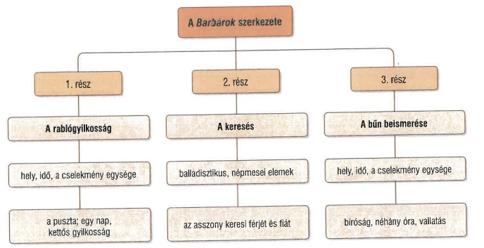

Móricz novellisztikájának sajátosságai
FELELETVÁZLAT
Móricz novellisztikájának sajátosságai
- A Jókai- és a Mikszáth-próza hagyományaira épül.
- Realizmusból mutat a naturalizmus (ösztönök és indulatok előtérbe helyezése; közönségesség, nyerseség ábrázolása) felé.
- Jellemzője a drámaiság mint szervezőelv.
- Balladisztikus és népmesei elemek megjelenése.
- Romantikus népiesség (idealizált népi világ - Petőfi) ↔ újnépiesség (valósághűség, a problémák megjelenítése - Móricz).
- Árnyalt lélekábrázolás, szabad függő beszéd, anekdotikus elemek.
- Témája a társadalom peremén élő emberek hétköznapjainak, nyomorúságának, kiszolgáltatottságának bemutatása.
Tragédia
- Cím: a tragédia szó műfaji és köznapi jelentése szerint is a szöveg értékpusztulásról szól majd → nem teljesül ez az előfeltevés → irónia.
- A novella főszereplője, Kis János, napszámból élő zsellér, aki élete fő hajtóerejének tartja, hogy egyszer életében bűnösen sokat egyen, „kizabálja” munkaadóját, Sarudyt a vagyonából annak lányának lagziján. Gondolatban alaposan felkészül az alkalomra. Amikor egy húsdarab a torkán akad, nem hajlandó kiköpni, inkább megfullad.
- A mélyszegénységben sínylődő Kis János élet- és emberidegen, magányos ösztönlény, akinek egész tudatát betölti az evés.
- Neve beszélő név, személyiségének egyszerűségére, kisszerűségére utal.
- Külseje és megnyilvánulásai jelentéktelenek, észrevétlenek, semmitmondók.
- Kicsinyes cél vezérli: enni, jóllakni, bármi áron.
- Halála nem ébreszt együttérzést, csak szánalmat. Annyiban azonban tragikus, hogy rámutat a szegénységből és az éhségből fakadó gyűlölet és irigység pusztító erejére.
- A Móriczra jellemző gyors lezárás, a tömör tárgyilagosság kegyetlen ítéletet fogalmaz meg a társadalom közönyéről: „Senki sem vette észre, hogy eltűnt, mint azt sem, hogy ott volt, vagy azt, hogy élt.”
- A narrátor nem kommentál, az olvasóra bízza a következtetések levonását, az értelmezést.
Barbárok
- Cím: A „barbárok” szó pejoratív stílusértékű kifejezés, és nemcsak bárdolatlan, kegyetlen cselekvésre utal, hanem arra a világra is, amelyben a novella játszódik.
- Egy rablógyilkosság és annak következményei adják az elbeszélés történetét: Bodri juhászt és fiát mondvacsinált ürüggyel (a rézveretes öv megszerzése) megöli a veres juhász és a társa, majd a háromszáz birkáját és két szamarát elhajtják. Feleségét félrevezetik. Egy lélektani csavarnak köszönhetően végül beismerik bűnüket a vizsgálóbíró előtt.
- Szereplői alig beszélnek: a puritán nyelv, az egyszerű, de sokat mondó tőmondatok, a rideg tények felvonultatása, az aprólékos ábrázolásmód mind a naturalizmus eszköztárából való.
- Az elbeszélés számokkal jelölt három részből áll.
- A rézveretes öv motívuma mindhárom részben felbukkan → ürügy a gyilkosságra → segít a holttestek megtalálásában → a beismerés eszköze (lelkiismeret-furdalás vagy babonás félelem: a veres juhász számára az öv a halott lelkének megjelenítője; a pusztai emberek hiedelmeit jól ismerő bíró ezért tudja vallomásra bírni).
- A novella végén a bíró szájából hangzik el: „Barbárok.” → címértelmezés → a puszta egyszerre a civilizációtól érintetlen ősi hagyomány, szépség (Bodri és a felesége) és az erőszak (veres juhász) világa.
Móricz a Tragédiában és a Barbárokban megjelenített társadalomkritikája a peremre szorult szegényparasztok életének látlelete.
